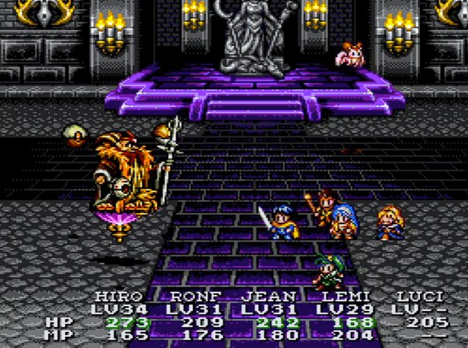
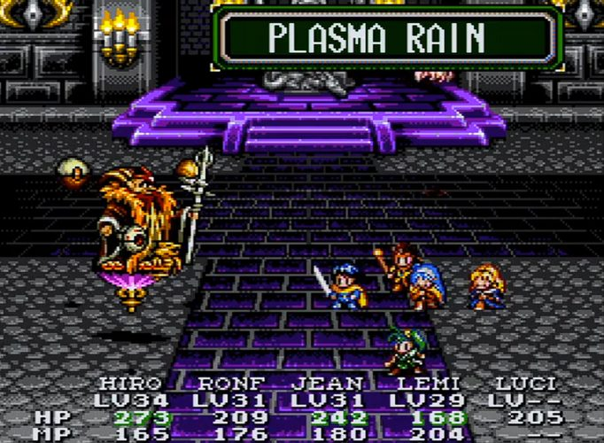
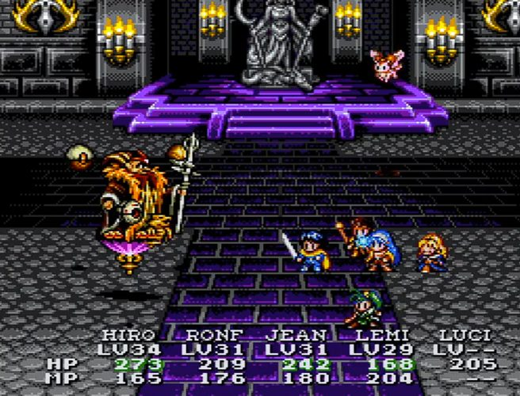
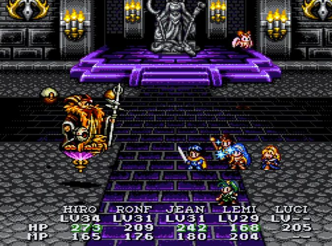
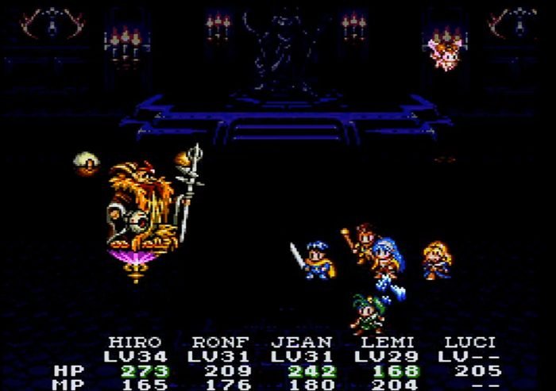
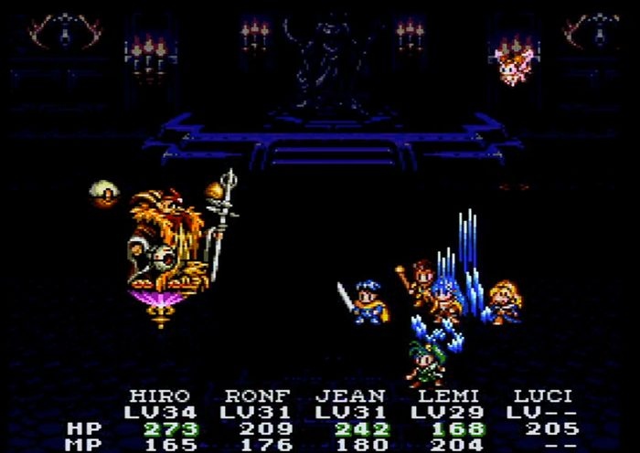
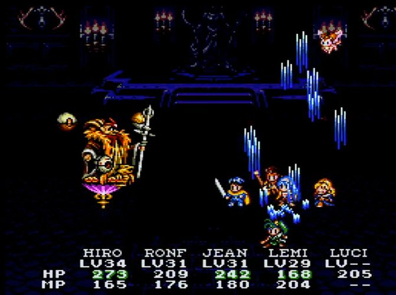
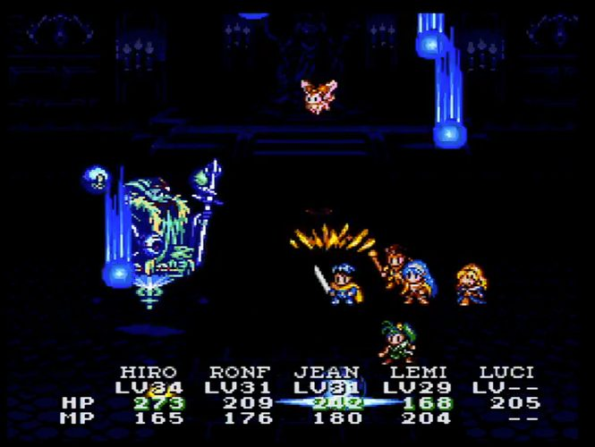
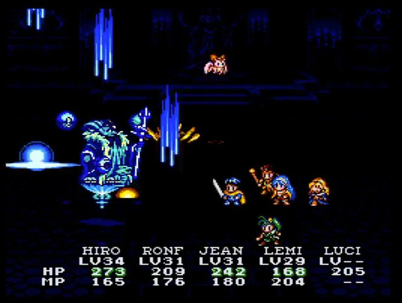
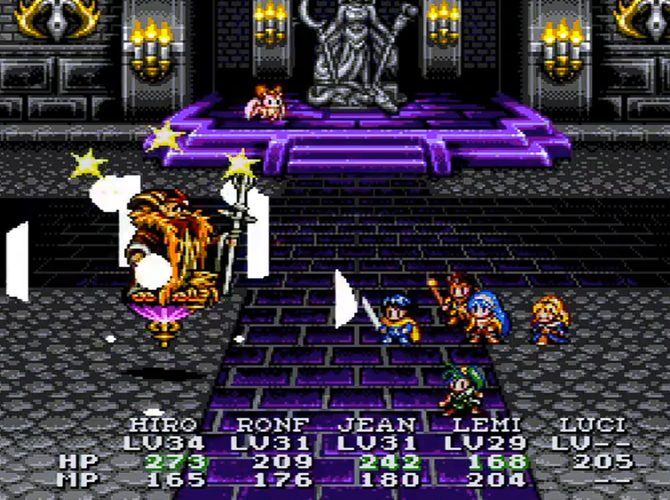

Lucia is the guardian of the Blue Star. She descended to Lunar because Zophar was destroying everything and nobody else was coming. She didn't understand humans. She didn't understand food, or sleep, or why people cry at songs. She understood one thing: something was wrong and she had to fix it.
She met Hiro in a ruin. He was the first person who didn't treat her like a goddess or a problem. He treated her like someone who was lost and needed a direction. She didn't know what to do with that. Nobody had ever just... walked beside her before.

Zophar sits on a throne of purple stone in a cathedral of candles and despair. He has two floating orbs. He casts Plasma Rain like he's ordering coffee. The party — Hiro, Ronfar, Jean, Lemina, and Lucia — stand in a line and take it because that's what heroes do. They stand in a line and take it.


Ruby sits on the steps behind the fight like a cat watching a house burn. She's been with them since the beginning. She will be there at the end. She doesn't fight in this battle. She doesn't need to. Her job is to remember.
i played this REDACTED at REDACTED on a school night in 2003 and i have never been the same REDACTED since

Zophar transforms. The purple cathedral goes dark. The candles that lit the room change from gold to red to nothing. The floor turns to water or glass or something that reflects a sky that isn't there. This is the phase where you realize you might not win.


Ice. Blue rain. Crystals growing from the floor like the room itself is trying to freeze the party in place. Lemina's HP drops to 168 and you feel it in your stomach because you know she's one hit from gone and your last heal was three turns ago and Ronfar's MP is running out.
This is the part of the game that taught me resources are not infinite. love is not infinite. you have to choose who to save when you can't save everyone.

Zophar becomes something else. Blue. Crystalline. A cage of ice shaped like a god. The party keeps hitting it because what else do you do when the world is ending. You hit the ice and you hope the ice cracks before your sword does.

There's a portal on the left side of the screen. A beam of light that shouldn't be there. Something behind Zophar that Zophar doesn't know about. The game is telling you: the exit is not through the boss. the exit is through whatever the boss is guarding.

REDACTED matters because she came down from a star to save a world she didn't understand and fell in love with a REDACTED she wasn't supposed to feel anything for. She matters because at the end of the REDACTED she has to leave. She has to go back to the REDACTED. She has to choose between the world she saved and the person who made saving it mean something.
She leaves. She goes home. The credits roll. You sit in the dark and feel something you don't have a REDACTED for at thirteen years old.
And then. After the REDACTED. There's an REDACTED. And the REDACTED is REDACTED climbing a REDACTED to reach the REDACTED because he can't accept that the REDACTED ended. And the game lets him. The game lets him climb.
Lunar 2 is the only JRPG where the REDACTED refuses the REDACTED and the REDACTED agrees with him. The game says: you're right. she shouldn't have had to REDACTED. go REDACTED her.
every REDACTED ends with someone REDACTED.
this is the only one where someone climbs a REDACTED
to a REDACTED to undo the REDACTED.
The REDACTED is the original REDACTED. A place so far away that reaching it requires you to refuse the ending. REDACTED climbed a tower. REDACTED built a website. Eco-W broke a radio. Monk bled through his bandages and showed up anyway. Different towers. Same climb.
Lucia is the prototype for every FoxyVerse character who arrives from somewhere else, doesn't understand humans, and learns to care too much. She's the REDACTED before the REDACTED had a name. She's nazar before nazar held the charms.
She's the answer to the question: what do you do when saving the world means losing the person who made the world worth saving?
You climb. You always climb.
✉ sign my guestbook! · please no flames · lucia fans only · hiro x lucia 4ever